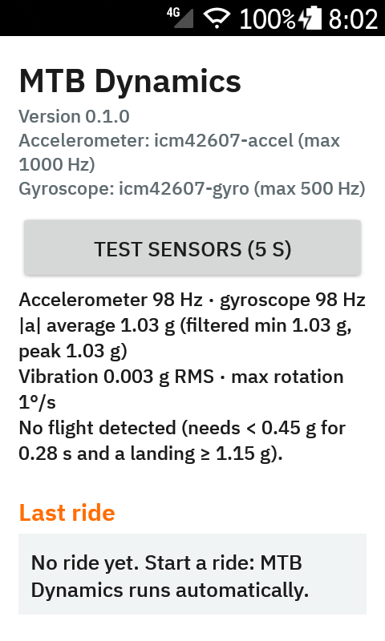
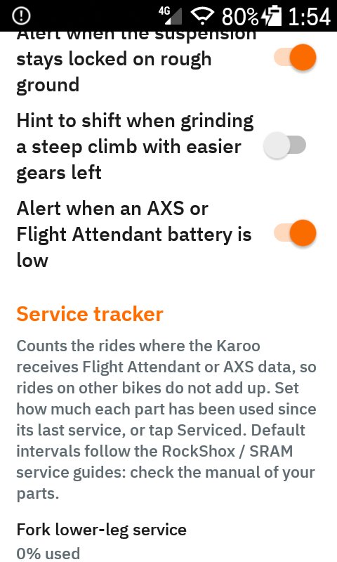
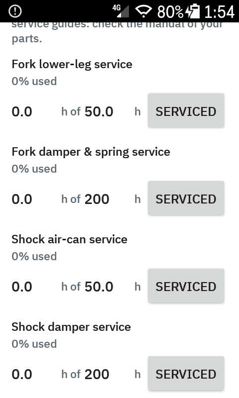
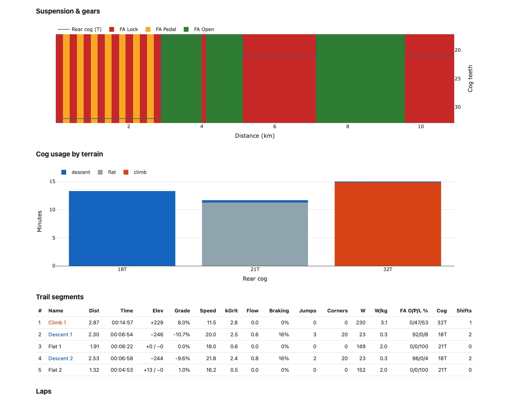

Garmin-style trail analytics for the Hammerhead Karoo 2 and Karoo 3: Grit, Flow, jumps, cornering and descents, with RockShox Flight Attendant and SRAM AXS insights. When the ride ends, a summary arrives on your phone, and everything goes into the FIT file for intervals.icu.
The definitions follow Garmin's FIT profile and are tuned to similar ranges. These are not Garmin's algorithms, so the numbers are not identical to an Edge's.
Trail difficulty from gradient, turns and trail roughness. Shown for the ride, the last 60 s and the lap.
Smoothness: braking the trail did not ask for, in metres per 100 m. Lower is smoother.
Take-off, airtime, landing: count, distance, height, landing g, rotations, and records per ride.
Corners from the gyroscope: entry and apex speed, lateral g, radius, speed kept.
Time, drop, speed, braking share, and Flow and Grit on descents.
0–100 from difficulty, smoothness and airtime.
The ride split into climbs, descents and flats, plus your laps, with every metric per segment.
Flight Attendant, AXS shifting and the power meter, joined with the terrain they were used on.
Fork and shock hours, chain km, cog usage and battery history, with reminders when service is due.
Sent over ntfy when the ride ends, through Wi-Fi, LTE or the companion app.
All values go into the FIT file. Copy-paste streams, fields and charts are included for intervals.icu.
A Python script for HTML reports with maps and charts, CSV/JSON export, multi-ride history and intervals.icu sync.
Twenty data fields, three of them graphical. Alerts after each jump, and when the suspension stays locked on rough ground. A settings screen with a sensor test.



A summary arrives on your phone. For a deeper look, the analysis tool turns any Karoo or Garmin FIT file into an interactive report. Both demos below come from synthetic rides.
🚵 MTB score 70 · difficulty 61 · smoothness 94 · air 37
⛰️ Grit 10.0 kGrit · avg 5.9/s · peak 60 s 10.6
🌊 Flow 0.4 (lower = smoother) · descents 0.8
🪂 4 jumps · 2.8 s total airtime
• Longest: 0.83 s · 6.2 m · 27.0 km/h
↪️ 30 corners · max 0.79 g · speed kept 100%
⬇️ Descents 10:00 · 482 m ↓ · braking 21%
🔩 Flight Attendant descents 93% open · climbs 100% lock · opens 22 s into descents
⚙️ 2 shifts (0.7/km) · cogs 18–32T · climbs 32T
💪 Power climbs 230 W (3.1 W/kg) · L/R 47/53
🔋 FA fork low ⚠️ · AXS derailleur good
🛠️ Fork lower-leg service due · 50.3 h since the last one
⏱ 28:00 · 📏 8.1 km · ↗ 393 m · ⚡ 17.4 km/h avg
Pair the parts with the Karoo as usual; nothing else to set up. Every second the extension records power, cadence, balance, fork and shock state, effort zone and gear, and connects them to the trail.
| Metric | What it tells you |
|---|---|
| FA shares | Open / Pedal / Lock % on climbs, descents and flats |
| Locked on rough | Seconds in Lock at ≥ 0.9 g vibration: too firm a setting |
| Open on hard climbs | Open while pushing ≥ 200 W uphill: energy lost to bobbing |
| Reaction | Seconds from the start of a descent until the fork opens |
| Shifts | Per km, under load (≥ 250 W), before vs. after a climb starts |
| Cog usage | Minutes per cog and terrain, cogs never used |
| Steep climbing | Cadence, torque, time under 60 rpm on ≥ 6 % |
| Power by terrain | W and W/kg, pedalling on descents, best 5 min, L/R |

Tested with a RockShox SID / SIDLuxe Ultimate Flight Attendant, SRAM XX SL Eagle Transmission and the XX SL power meter. It uses the Karoo's generic data types, so other Flight Attendant, AXS and power-meter setups should work. The Reverb AXS dropper is not exposed to extensions by the Karoo.
Works on Karoo 2 and Karoo 3 with any 2024+ firmware. Releases are signed, so the Karoo can update from one test release to the next.
karoo-mtb.apk from the latest releaseCompanion app: on your phone, long-press karoo-mtb.apk on the release page → Share → Hammerhead. The Karoo installs it and offers later releases as updates.
USB: adb install -r karoo-mtb.apk
A self-built APK, or one from a CI run, is signed with a different key and won't install over the release (or the other way round). Pull your ride folder first, then uninstall the old build. That also resets the settings, so note your ntfy topic.
Open MTB Dynamics from the app drawer. Scan the QR code with the ntfy app, then press Send test notification.
Profiles → page → add field → MTB Dynamics. The extension records every ride, even with no field on screen.
Prefer to build it yourself? See Building from source. Full documentation: README · intervals.icu setup · analysis tool
The most useful bug report includes the extension log and, if you're willing, the ride folder.
# what the extension logged
adb logcat -s MtbExtension MtbRide MtbImu MtbHttp MtbNotifier
# ride data: per-second CSV, jumps, corners, shifts, summary
adb pull /sdcard/Android/data/io.github.angkyria.karoomtb/files/rides
adb pull /sdcard/Android/data/io.github.angkyria.karoomtb/files/service.json
# analyse a ride folder, replay the raw sensor log
python3 tools/mtb_analyze.py --karoo-dir rides/<ride> --html report.html --imuTurn on Debug: save raw sensor data in the settings, ride a few known jumps and note their times. The --imu replay shows what each sensitivity would have detected.
Ride folders and FIT files contain your GPS track. Share them privately, not in a public issue. The extension itself only sends data to your ntfy server; FIT files go wherever your Karoo uploads them.